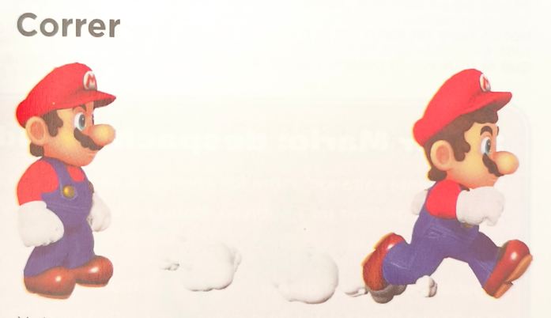
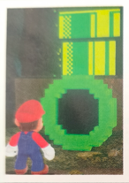
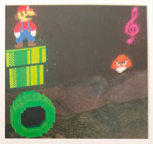
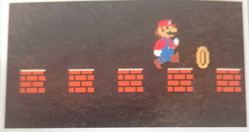
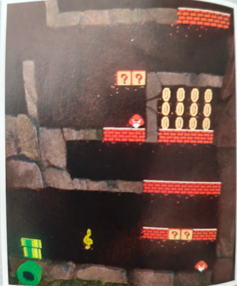
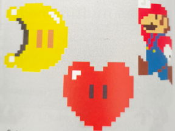
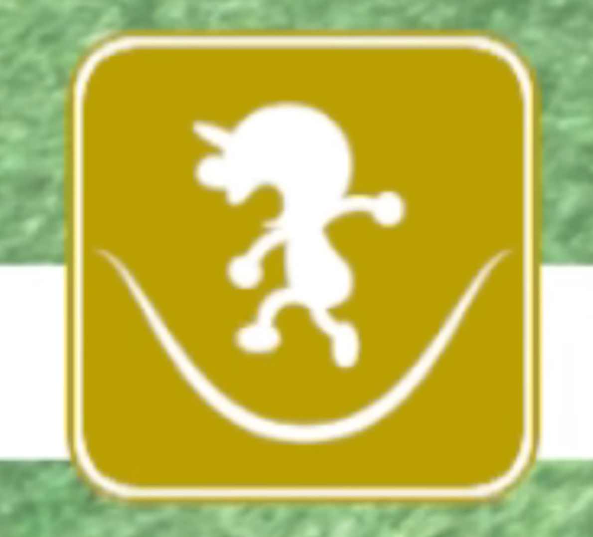
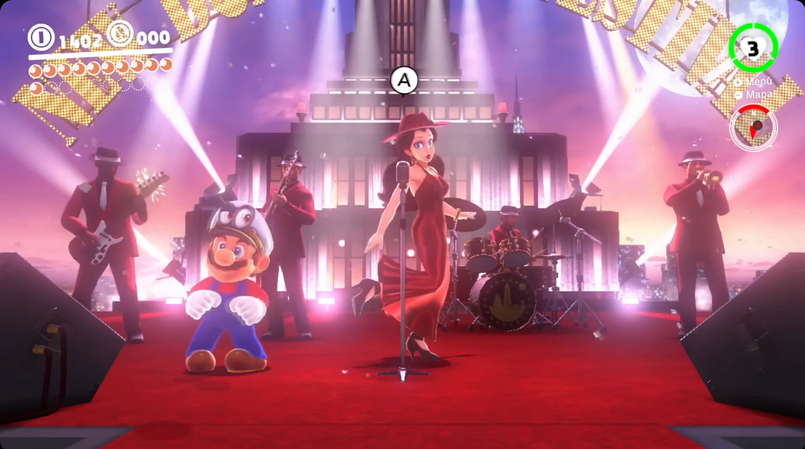

En Super Mario Odyssey, los movimientos de Mario recogen la esencia de los juegos clásicos de la saga y la combinan con nuevas habilidades. Aunque gran parte de la aventura puede superarse utilizando acciones básicas como correr, saltar o lanzar la gorra, el juego ofrece muchas formas distintas de desplazarse y superar obstáculos.

A lo largo de los años, Mario ha ido ganando nuevas técnicas que amplían las posibilidades de exploración. Algunas de ellas recuerdan a entregas anteriores como Super Mario 64 o Super Mario Sunshine, mientras que otras han sido creadas específicamente para esta aventura. Gracias a ello, cada reino puede recorrerse de numerosas maneras.


Las tuberias pexeladas evocan el pasado de mario, se trata de esenarios retro donde mario aparece y se mueve como en el mario bros.
corre a la izquierda y a la derecha con la palanca, mantenla abajo para agacharte.
los escenarios estan llenos de peligros de la época NES.


Explora las tuberías de 8 bits mientras llevas puestos conjuntos de la tienda Crazy Cap para ver cómo los adaptan al formato 8 bits. Asegúrate de combinar el traje con el sombrero antes de entrar en una tubería de 8 bits. De no ser así, Mario vestirá el clásico mono de trabajo en 2D.

El primer tráiler de presentación de Super Mario Odyssey se mostró en enero de 2017 durante la presentación de Nintendo Switch. Una de las cosas que más sorprendió a los fans fue ver a Mario explorando una ciudad moderna llamada Nueva Donk, llena de edificios y personas con proporciones realistas. Esto fue algo muy diferente a los mundos tradicionales de Mario. Además, el tráiler permitió descubrir por primera vez la nueva mecánica de Cappy, el sombrero mágico que permite a Mario capturar enemigos, objetos y otros personajes para aprovechar sus habilidades. El juego se lanzó oficialmente el 27 de octubre de 2017 para Nintendo Switch.
En los minijuegos se encuentra un personaje como simobolo de estos que se representa con el personaje de nintendo "MR. game & wach" del cual muy poca gente se habia dado cuenta.


En este videojuego se nos vuelve a presentar a uno de los primeros personajes presentados de l universo de mario, a pauline que aparece por primera vez en los primeros juegos de mario vs donkey kong en la que es raptada mientras mario se enfrenta a numerosos peligros para rescatarla.